1. 
| 2. 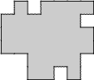 | 3. 
| 4. 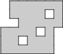
| 5. 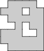
| 6. 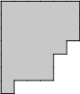
| 7. 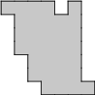
| 8. 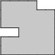
| 9. 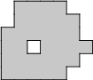
| 10. 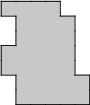
| 11. 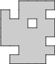
| 12. 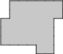
| 13. 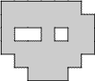
| 14. 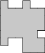
| 15. 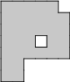
| 16. 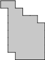
| 17. | 
18. 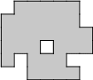
| 19. 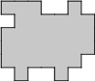
| 20. 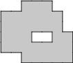
| |
| 21. 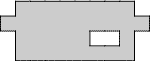 | 22. 
| 23. |
The solutions are here.
Using only horizontal and vertical cuts, divide each region into 4 identical pieces consisting of 8 unit squares. The pieces may be rotated and/or reflected.
1.
2. 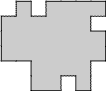
3.
4. 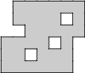
5. 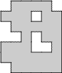
6. 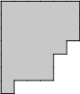
7. 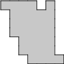
8. 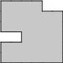
9. 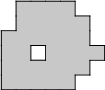
10. 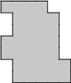
11. 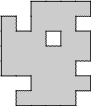
12. 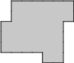
13. 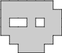
14. 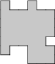
15. 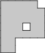
16. 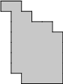
17.
18. 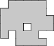
19. 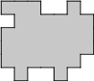
20. 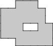
21. 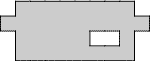
22.
23.
The solutions are here.